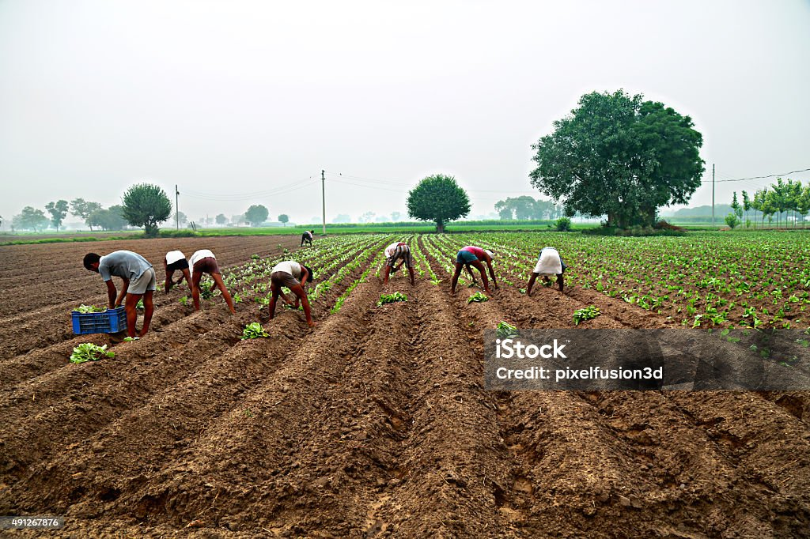

Empowering Farmers & Landowners
Welcome to AgroConnect, a platform designed to connect landowners and farmers/workers. Whether you are a farmer looking for land to work on or a landowner needing skilled workers, we provide a seamless way to meet your agricultural needs.
Farmers can rent land on a daily basis to cultivate crops, manage livestock, or engage in other farming activities. In turn, landowners can offer their land and pay workers based on the area of land worked and the tasks performed. It's a fair, transparent, and efficient way to help grow the future of agriculture.

